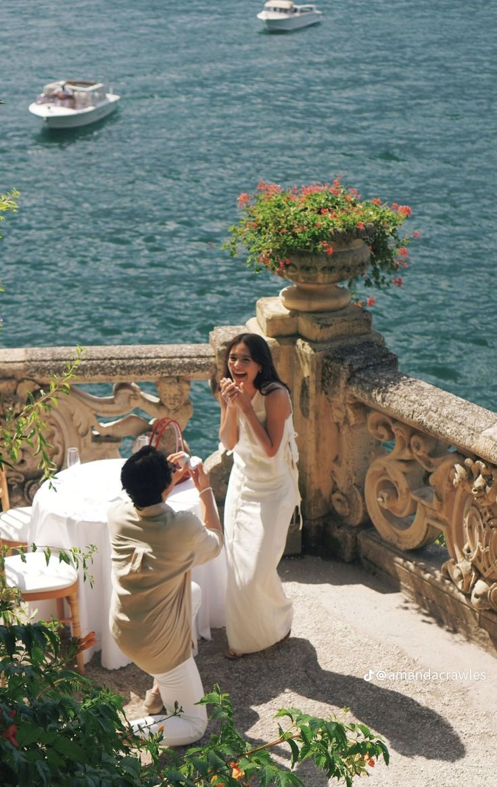
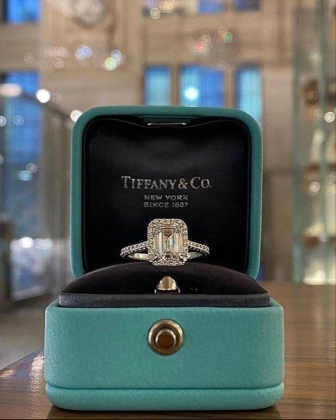
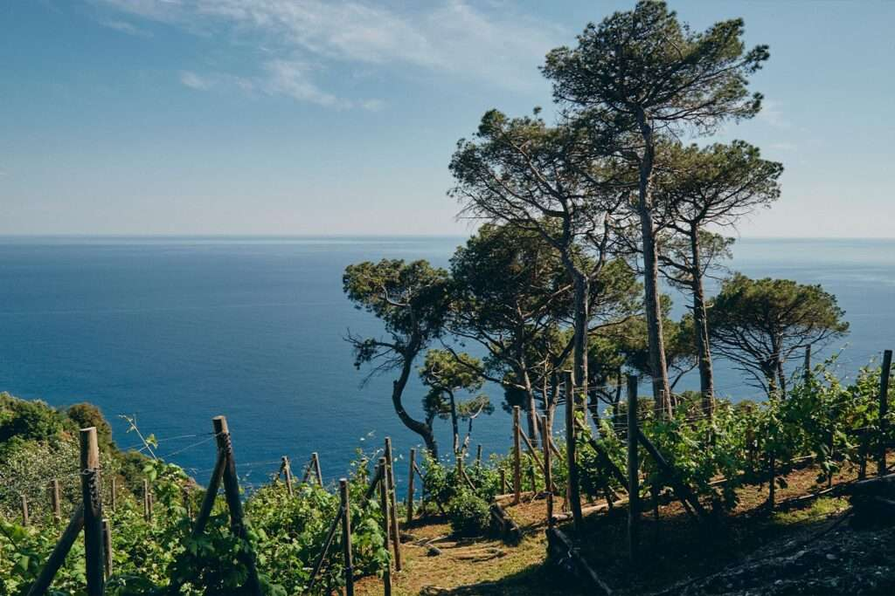
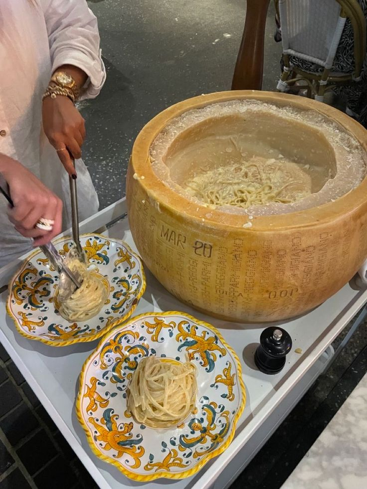
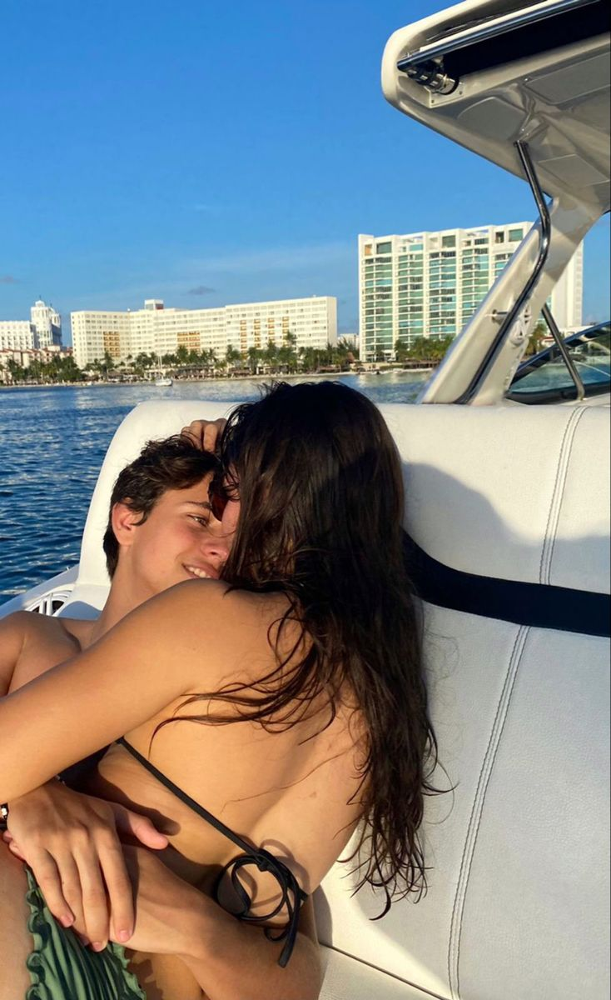
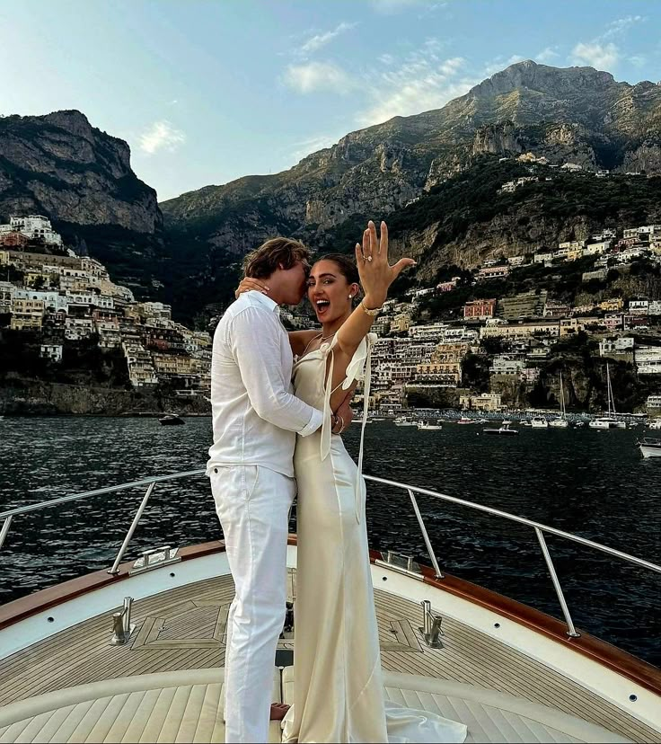
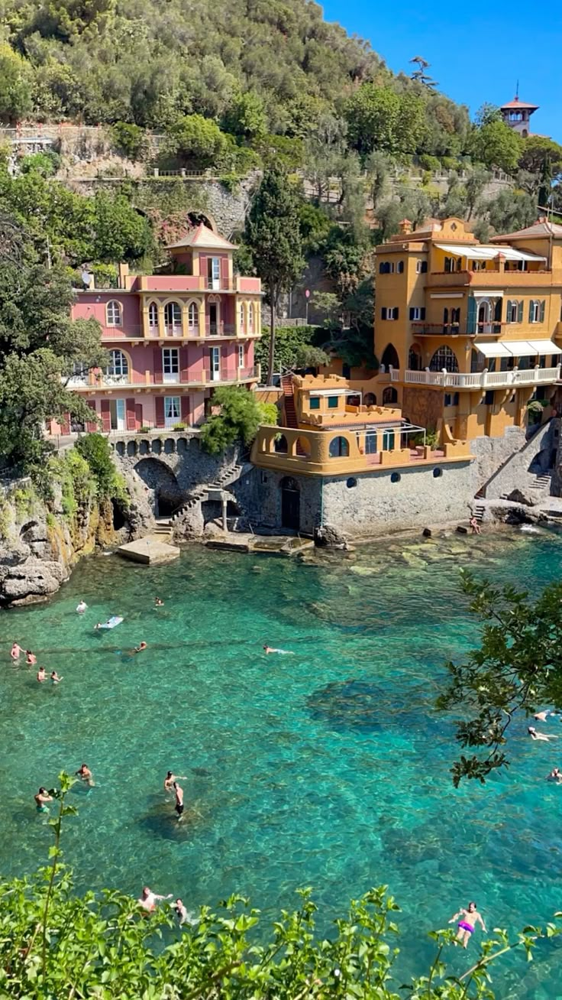
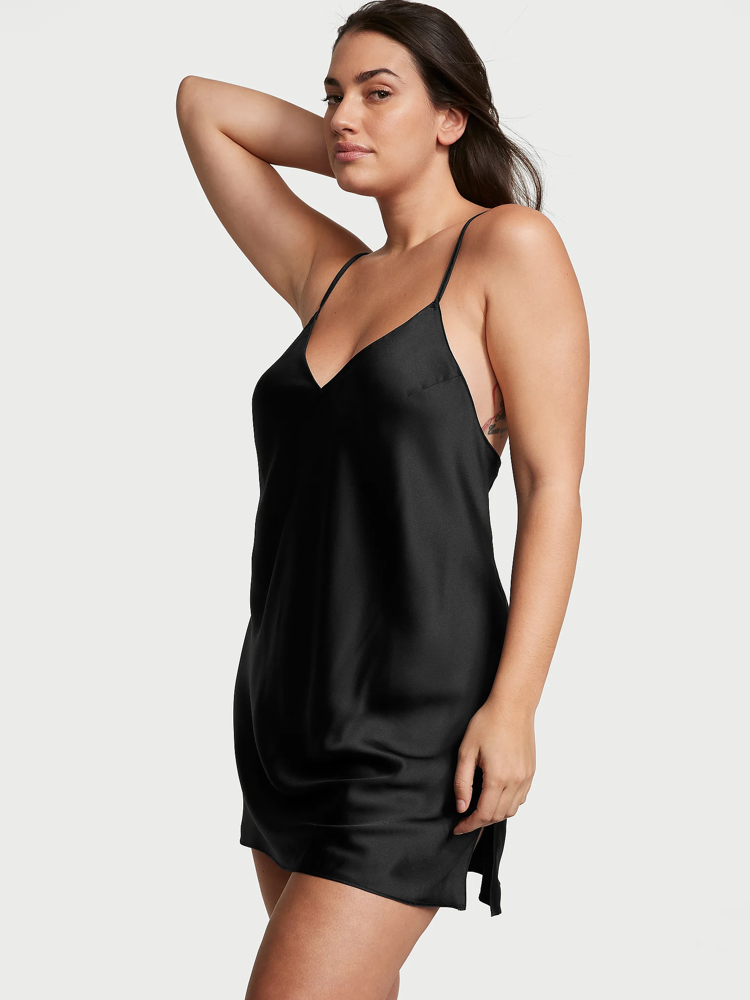
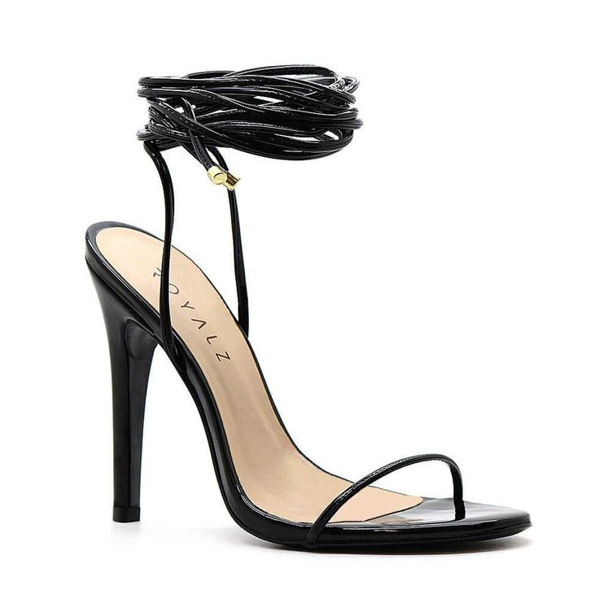
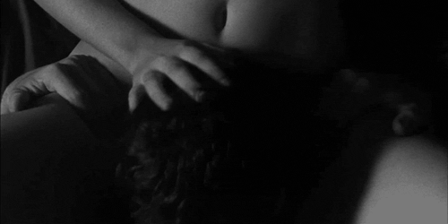

Na manhã do dia seguinte, o sol já brilhava com força quando saímos para uma caminhada pelos arredores do hotel. Tomamos café da manhã normalmente, mas eu estava mais quieto do que o normal, tentando disfarçar a ansiedade que crescia a cada passo. Caminhamos por uma trilha tranquila cercada por verde e com uma vista deslumbrante do mar da Ligúria. A brisa suave carregava o cheiro do sal e das flores do campo, e tudo parecia conspirar para aquele instante.
Capítulo 2
Mesmo com o cenário perfeito, eu hesitei por um momento. O coração batia rápido. Inventei uma desculpa qualquer, dizendo que não estava muito no clima — menti dizendo que não queria nada íntimo de manhã. A verdade é que eu precisava me concentrar no que viria a seguir.
Paramos num mirante quase escondido, onde o som das ondas quebrando nas pedras abaixo criava um silêncio confortável entre nós. Foi ali. Me virei para você, respirei fundo, e me ajoelhei.
Falei do quanto você mudou minha vida. De como tudo, desde o nosso primeiro encontro, parecia apontar para aquele momento. Contei do amor que transbordava em mim, da leveza que você trouxe para meus dias, da segurança que encontrei no seu abraço. E disse, com toda a certeza do mundo, que queria passar todos os dias da minha vida ao seu lado.
Ali, sob o céu azul de Portofino, com suas mãos nas minhas e o coração mais leve do que nunca, eu soube: aquele era o começo do sempre. Eu pedi você em casamento — e o mundo pareceu parar por um instante.

Você levou as mãos à boca, surpresa, com os olhos já cheios d’água. Ficou em silêncio por alguns segundos, como se estivesse tentando acreditar que aquilo estava mesmo acontecendo. Então, você sorriu — aquele sorriso que sempre me desmonta — e disse, com a voz embargada de emoção: “Sim, é claro que sim!”
Nos abraçamos ali mesmo, num aperto forte, daqueles que parecem durar para sempre. Você chorava e ria ao mesmo tempo, e eu também não consegui segurar. Quando nos afastamos um pouco, olhamos um para o outro com os olhos vermelhos, e nos beijamos. Um beijo calmo, cheio de verdade, como se selássemos ali um pacto silencioso de amor e eternidade.

Você olhava o anel nas mãos como quem segura um tesouro. E eu só conseguia pensar no quanto era sortudo por ter encontrado alguém como você. Passamos um tempo ali sentados, abraçados, ouvindo o mar lá embaixo e curtindo aquele instante só nosso, tão simples e tão grandioso ao mesmo tempo.
Depois disso, a manhã ganhou um brilho novo. Voltamos ao hotel e conhecemos a Eco-Farm, um espaço encantador cheio de vida, plantas e pequenos animais, que só tornava aquele dia ainda mais especial. Passeamos por todo espaço e durou mais ou menos 3 horas.


Assim que saímos, procuramos um lugar para almoçar e acabamos comendo meu prato favorito em uma das ruas da cidade: fettuccine alfredo, servido de dentro de um queijo. Eu fiquei muito feliz, óbvio, mas você também gostou bastante de encontrar esse prato. Aproveitamos o espaço aconchegante das vielas para comer.
À tarde, seguimos até uma das pequenas praias escondidas de Portofino, cercada por falésias verdes e um mar incrivelmente transparente. Estendemos nossas toalhas na areia dourada, mergulhamos juntos nas águas calmas e aproveitamos o sol com o cheiro do sal e da vegetação ao redor. Entre um banho de mar e outro, conversávamos sobre tudo e nada — como se o tempo ali fosse feito só para nós.
Enquanto caminhávamos pela orla, avistamos um guia local oferecendo um passeio de barco pela costa. Te chamei com um sorriso, e em poucos minutos já estávamos embarcando. O barco deslizava suavemente sobre o azul profundo, revelando enseadas escondidas, grutas misteriosas e pequenas vilas coloridas encaixadas nas rochas.
Com o vento no rosto, o sol dourando sua pele e o som ritmado das ondas nos embalando, tudo parecia mágico. Vimos golfinhos ao longe, tiramos fotos juntos com o horizonte infinito ao fundo, e até paramos para mergulhar em uma baía isolada. Cada instante era um presente — e, mais do que isso, a certeza de que aquele sonho estava apenas começando a ser vivido… a dois, para sempre.



A noite havia caído sobre Portofino, envolvendo a vila em um silêncio tranquilo e quase mágico. Após um jantar à luz de velas em um restaurante acolhedor à beira-mar — onde o vinho era leve, a comida inesquecível e seus olhos refletiam as chamas das velas — caminhamos de volta para o hotel.
A brisa fresca da noite acariciava nossos rostos, misturando o cheiro do mar com o perfume das flores nos jardins das vilas ao redor. As luzes amareladas da vila se refletiam suavemente nas águas calmas do porto, criando um cenário digno de um filme antigo. Cada passo pela ruela de pedra iluminada parecia nos conduzir para algo maior, como se o universo inteiro estivesse em silêncio, torcendo por nós. E eu sentia, com uma certeza doce e serena, que algo muito especial estava prestes a acontecer.
Ao chegarmos no quarto, tudo já parecia mais silencioso, mais lento, como se o tempo ali tivesse resolvido se demorar um pouco. As janelas estavam entreabertas, deixando entrar o som distante das ondas e o aroma salgado do mar misturado ao perfume das flores italianas. A iluminação era suave, dourada, convidativa.
Me aproximei de você com um sorriso tranquilo, o olhar firme, e tirei de dentro da mala um embrulho pequeno, envolto em papel claro com um laço de cetim. “Tenho algo pra você”, eu disse, enquanto colocava o presente nas suas mãos.
Você abriu com curiosidade e, ao ver, sorriu surpresa — era um body da Victoria’s Secret, de renda preta, sensual e elegante, com detalhes que pareciam desenhados pra você. Seus olhos brilharam. “É lindo…”, você murmurou, me lançando aquele olhar que dizia mais do que qualquer palavra.
Você foi até o banheiro, enquanto eu apaguei algumas luzes, deixando só os abajures acesos. Coloquei uma música baixa, uma melodia suave em italiano, e me sentei na beira da cama, esperando.
Quando você saiu, eu fiquei sem palavras. O body moldava seu corpo como se tivesse sido feito sob medida. Cada curva sua era um poema, e o modo como você caminhava até mim — confiante, entregue, com os olhos fixos nos meus — só deixava tudo ainda mais intenso.
Nos aproximamos devagar. Toquei seu rosto com as pontas dos dedos, como se você fosse feita de vidro fino. Você sorriu e se aproximou mais, até nossos corpos se encostarem. Nos beijamos, primeiro com calma, depois com mais vontade. Nossos movimentos pareciam conversar, como se aquele instante fosse uma dança conhecida só por nós dois.
Então eu peguei mais uma caixa, dessa vez um salto. Pedi para você vestir e ficou deslumbrante.


Você estava tão bonita. Bonita é pouco, estava perfeita, gostosa. O vestidinho marcando a bunda e as regiões sem tecido mostrando sua pele. Meu pau já estava duro e tudo que eu queria era te comer, ali mesmo, na frente da porta de entrada. Tirei minha blusa e então, eu te peguei por trás, segurei seus braços como se você fosse minha presa. Te encoxei e você sentiu meu pau roçando. Você sabia das minhas intenções e não ficou contra. Dessa vez, você se fez de puta e me deixou fazer o que eu quisesse com você.
Ali, naquele quarto italiano, entre lençois brancos e suspiros abafados, não havia pressa. Só havia a certeza de que aquele amor era real, presente, e inesquecível.
Eu te joguei na cama e fui imediatamente chupar sua buceta. Eu lidava com ela como se fosse a porta de entrada para meu prazer. Chupei com muita vontade, como se fosse eu quem estava para gozar. Eu alternava entre lambidas e chupadas, pegando clitóris e os lábios. Passava o dedo para te atiçar ainda mais, mas você estava tão excitada, tão anestesiada com tudo que estava acontecendo que gozou muito rápido. Mas eu não parei, eu queria te ver sofrer de prazer e o que eu precisava era de te ver gozando mais uma vez, naquela mesma posição. Segurei sua mão e seu quadril e continuei, sem gel nem nada, apenas minha saliva e seu gozo. Não vou mentir que queria arrebentar essa buceta gostosa, mas eu mantive e não demorou pra você gritar muito alto.

Olhei nos seus olhos e dei um tempo para você se recuperar. Enquanto isso eu já estava tirando as calças. O meu tesão estava no limite, daqueles dias que eu gozo duas vezes ou mais em algumas horas. Você estava satisfeita consigo mesma, com seu corpo e aparência, mostrava uma confiança que me deixou ainda com mais vontade de te foder. Foder forte.
Deitei ao seu lado para me envolver em um beijo apaixonante com você. Nem vi o tempo passar, mas você já implorava por meu pau. Deitada de salto, coloquei suas pernas no meu ombro e, na beirada da cama, te preenchi com meu pau. Naquela posição eu colocava até o fundo em você, acelerando e indo devagar. Você estava toda molhada e muito quente. Eu segurava seu quadril e empurrava com força. A gente gemia em sintonia, eu louco por você, querendo te molhar com meu gozo. Mas com seu pijama novo eu tinha outros planos, queria gozar na sua boca. Quando eu cheguei perto de gozar, parei e te chamei.
Coloquei você ajoelhada nos meus pés e você me chupou com vontade. Lambia e chupava meu pau inteiro, colocava as mãos nas minhas bolas do jeito que você faz e que eu amo. Não demorei nada e seu homem gozou tudo na sua boca.
Assim que terminei, você foi ao banheiro como sempre, mas eu fui atrás. Depois que cuspiu eu te beijei muito. Agora um beijo de amor mesmo, de agradecimento e felicidade por todo o nosso relacionamento. Da compreensão e das buscas incessantes por melhorias. Beijei como se eu beijasse sua alma e eu sabia que você fazia o mesmo. Eu te amo e sempre te amarei.
E em um gesto típico de casal, escovamos os dentes e fomos deitar logo após a crise de paixão. Tirei seu salto e coloquei você na conchinha menor. Queria dar o conforto que minha parceira sempre merece, então fiz massagens e carinhos. Muitos minutos passaram.
Mas eu não queria parar por ali. Eu queria explorar outros buracos seus… Você também não estava satisfeita, então foi muito fácil para a gente engatar em um beijo profundo cheio de tesão.
Te peguei pelo pescoço e coloquei de quatro. Tirei seu body e você só aceitava. Peguei uma camisinha e bastante lubrificante para fazer o que eu queria, arrebentar seu cu. Fui colocando bem devagar, até você se acostumar. Meu pau estava duro como pedra. Então, peguei seu vibrador, fiz gracinhas com ele te maltratando e por fim enfiei ele todo. Liguei todos os modos, você ficou louca. Comecei a te foder, você estava em êxtase, toda aberta, mas estava uma delícia. Me chamava pelo nome e pedia pra eu acabar com você.
Fomos nesse embalo por algum tempo, você gemendo alto e avisando que ia gozar, eu no ritmo máximo fodendo sua bunda, te dando tapas. Quase juntos, gozamos muito forte. Enquanto eu gozava, puxei seu cabelo e te abracei por trás, enquanto eu esvaziava mais uma vez tudo que eu tinha dentro de você.
Quando acabamos, fomos ao banheiro nos limpar e, depois de uma troca de olhares e beijos, voltamos para a cama, dessa vez para dormir.